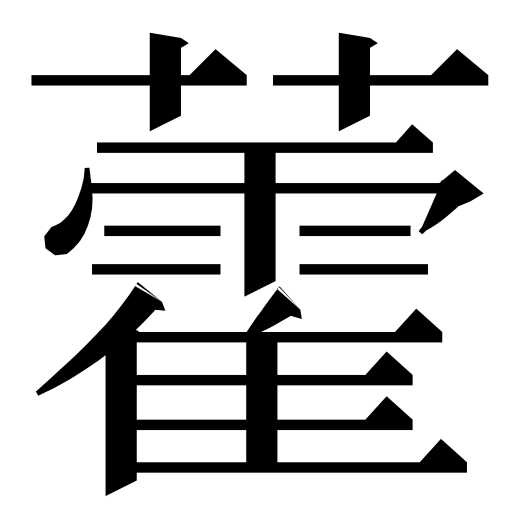
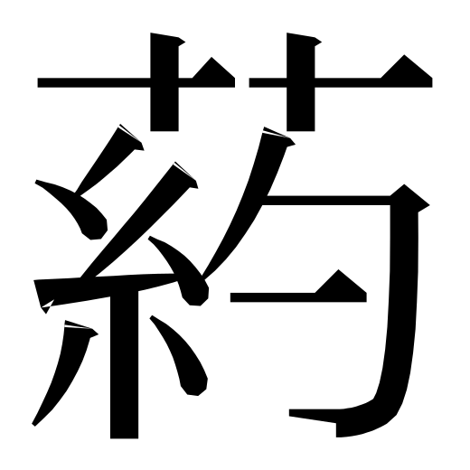

藿 · koseki-368300@9

gaijin_krcourt-085ff@1의 실제 canonical whole. 21raw · 21calls · 37P.
공식 고정 출처
실제 원본별 단일 엔진 캡처. 개별 획·접촉·필순·runtime 미승인. 비공개 사전 그래픽 없음.

gaijin_krcourt-085ff@1의 실제 canonical whole. 21raw · 21calls · 37P.
공식 고정 출처

4획 초두와 마지막 H를 갖춘 별개 전체 원본. 16raw · 17calls · 37P.
공식 고정 출처